A revision exam covering scientific method, STELR (climate and solar energy) and waves, sound and light. The original paper also had astronomy and radioactivity questions, which are not in the current course, so they have been left out (multiple-choice Questions 27, 28 and 32–40; short-answer Questions 9–14). Multiple-choice questions are worth 1 mark each.
Section A: Multiple choice
Scientific method
The first step of the scientific method involves:
Questions 2 and 3. A spectrophotometer measures how much light of different wavelengths is absorbed and transmitted by coloured solutions. Its dial has two scales: percent transmittance on the upper scale and absorbance on the lower scale.
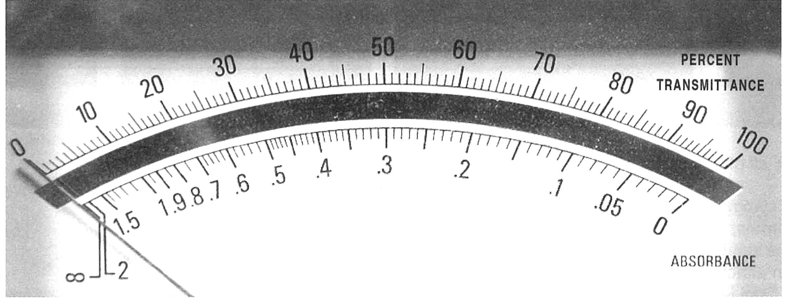
Which statement describes the relationship between transmittance and absorbance, based on these scales?
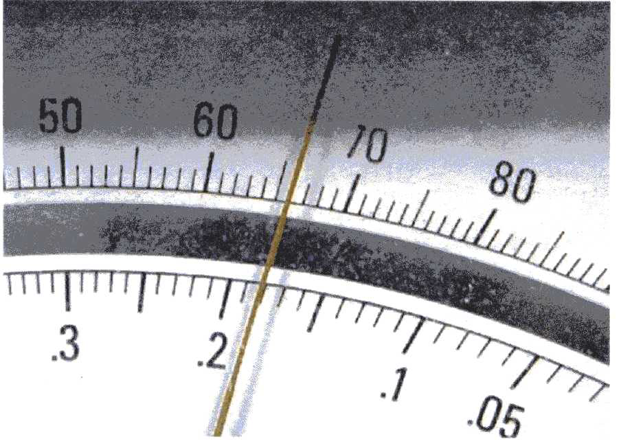
The photograph shows the spectrophotometer reading for a solution. What are its percentage transmittance and absorbance?
Questions 4 and 5. Air flowing over a cloth bag soaked in water produces a cooling effect through evaporation. When the air is dry, the evaporation is greater than when the air is moist. The cooling effect is used to calculate the relative humidity, using wet and dry bulb thermometers.
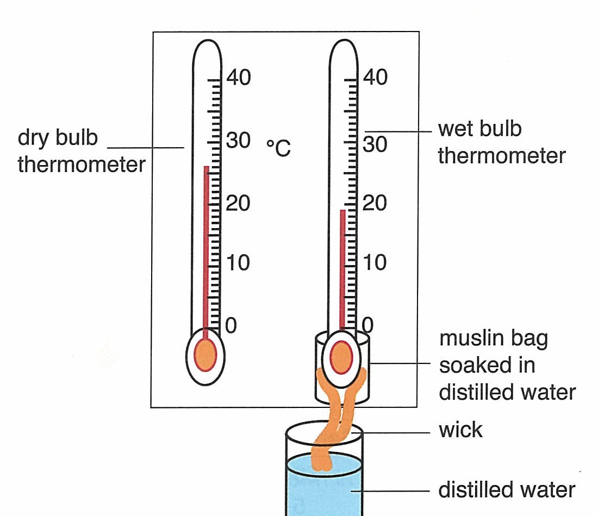
The table converts wet bulb depressions to relative humidity (%). Wet bulb depression = dry bulb temperature − wet bulb temperature.
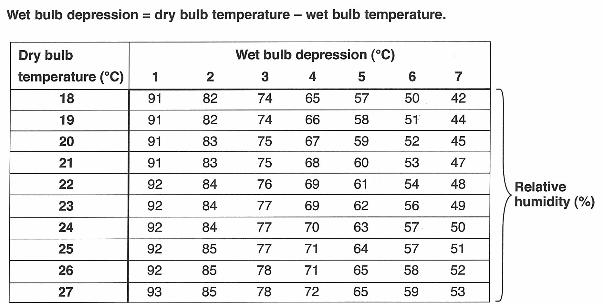
What is the relative humidity for the temperatures shown on the thermometers?
Dry bulb 26 °C, wet bulb 19 °C, so the depression is 7 °C. The table gives 52%.
As the dry bulb temperature increases…
Read down any column of the table: for the same depression, the humidity rises as the dry bulb temperature increases.
Which statement is most correct?
Questions 7 and 8. In the 17th century, people believed living things were spontaneously generated from non-living things; for example, rotting meat could turn into maggots. Francesco Redi thought maggots came from flies. He stated, "If meat is placed in a completely sealed jar there will not be any maggots." He placed different types of meat in several jars; some were covered and some uncovered. All the jars were kept at the same temperature with the same light and air. Maggots soon appeared in the uncovered jars, while the meat in the covered jars decayed without any maggots.
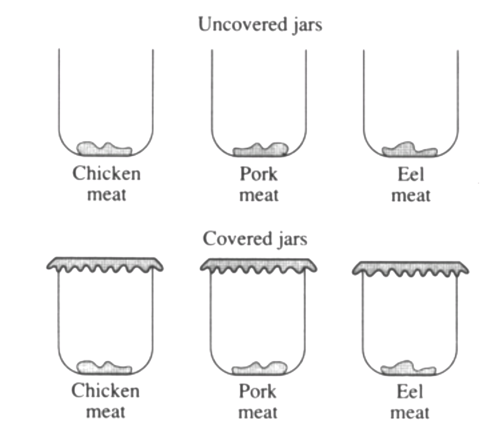
When Redi stated, "If meat is placed in a completely sealed jar there will not be any maggots", he was making:
Why did Redi use different types of meat?
Questions 9 and 10. The table shows how the air temperature varies with altitude over a desert.
| Temperature (°C) | 42 | 38 | 35 | 30 | 28 |
|---|---|---|---|---|---|
| Altitude (m) | 0 | 500 | 1000 | 1500 | 2000 |
Which statement is a generalisation that could be made from these data?
Which statement could not be made from these data?
The table has no humidity data.
Albert investigates the effect of the type of surface and the drop height on how high a tennis ball rebounds. The dependent variable is:
Jonathon's electronic balance reads 38.2 g for some gold, but he knows it reads 1.8 g with nothing on it. What is the actual mass of the gold, and what type of error does the scale have?
Harry investigates how the height of bean shoots is affected by the amount of sunlight they get each day, giving them a constant amount of water. How should he graph the data?
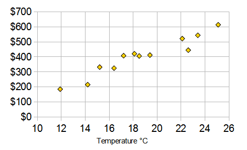
The chart shows a store's daily ice cream sales against the daily maximum temperature. Which best describes the relationship?
STELR
The enhanced greenhouse effect is causing a gradual increase in:
Which best describes the greenhouse effect on Earth?
Which of the following is not a greenhouse gas?
For a solar panel on an Australian home with a sloping roof, which position would deliver the greatest electrical power?
In the southern hemisphere, the Sun is in the northern part of the sky.
Which of the following is not a renewable energy resource?
Light and sound
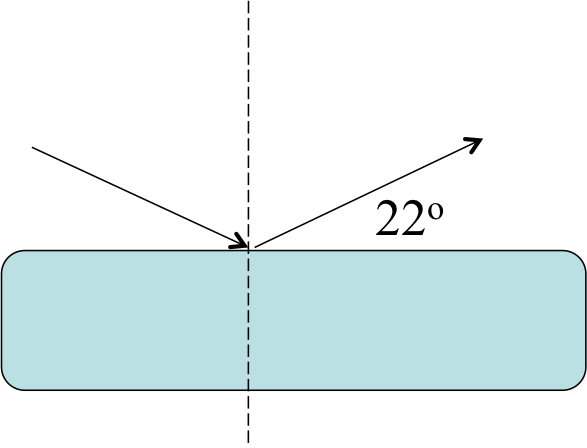
The light ray above is reflecting off a plane mirror. What is the angle of incidence?
Angles are measured from the normal: 90° − 22° = 68°.
An image in a plane mirror is:
When light passes from air into water at an angle of incidence of 60°, it will:
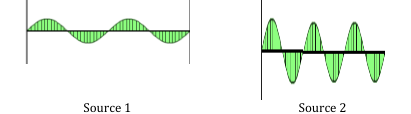
The diagrams depict light of two different colours. Which sentence could be correct?
Which statement is true?
The best reason why mixing magenta ink and cyan ink gives blue is:
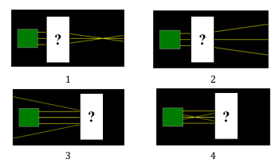
Which diagram shows the effect of a concave lens?
A concave lens transmits light and makes parallel rays diverge (spread out).
Which of the following is not a characteristic of waves?
A high-pitched sound has:
Which describes concave mirrors and concave lenses?
Section B: Short answer
Question 1 (10 marks)
Rich Wyatt is measuring the speeds of different bullets at different distances from his rifle. He wants to answer two questions: (1) What is the effect of the type of bullet on speed? (2) What is the effect of distance on bullet speed? He sets up five stations 200 m apart (A to E), each with a chronograph to measure bullet speed.
| Bullet type | A (200 m) | B (400 m) | C (600 m) | D (800 m) | E (1000 m) |
|---|---|---|---|---|---|
| Gammo | 400 | 350 | 300 | 250 | 200 |
| Rainbow | 650 | 610 | 570 | 530 | 490 |
| Winchester | 890 | 865 | 840 | 815 | 790 |
| Silver | 1200 | 1190 | 1180 | 1170 | 1160 |
Speeds are in m/s. Experiment 1: effect of bullet type on speed.
| Variable | Dependent or independent? | Type of variable |
|---|---|---|
| Bullet type | ||
| Speed |
Which chart type and axes would be most suitable for this data?
Experiment 2 (parts a–d on the paper are 1c–1f here). Rich graphs the data for the Rainbow bullet.
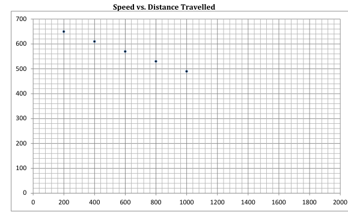
Label the axes: the vertical axis is and the horizontal axis is .
Use the graph or a calculation to estimate the speed of the Rainbow bullet at 500 m.
The speed drops by 40 m/s every 200 m. Halfway between 400 m (610 m/s) and 600 m (570 m/s) gives 590 m/s.
Use the graph or a calculation to find the distance at which the bullet slows to 340 m/s (the speed of sound).
Extend the line: from 490 m/s at 1000 m, it must drop another 150 m/s at 40 m/s per 200 m, which takes 750 m. So about 1750 m.
Which answer, d or e, is likely to be more reliable? Why?
d (1 mark), because it uses interpolation (within the range of the data) rather than extrapolation beyond it (1 mark).
Question 2 (4 marks)
For each graph or set of results, give a reason why the conclusion is unreasonable.
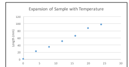
"The length of the sample at 160 °C will be 500 mm."
It is an extrapolation far beyond the range (domain) of the data, which only goes up to about 24 °C.
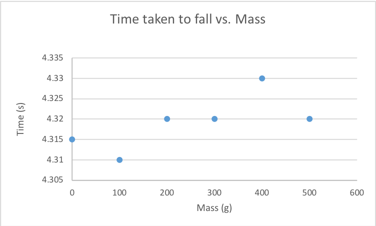
"The time taken for the mass to fall clearly increases as the mass increases."
The variation in the dependent variable is insignificant (only about 0.02 s); the vertical scale exaggerates it.
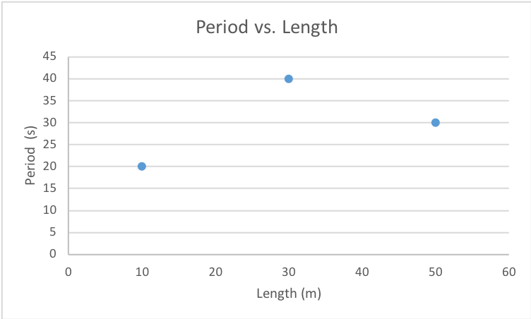
"Length has a clear parabolic effect on the period."
There are not enough data points (only three) to claim a parabolic trend.
Trial times (s): 2.4, 2.2, 2.2, 2.3, 12.2. "The average time taken was 4.26 s."
The 12.2 s result in trial 5 is an outlier and should not have been included in the average.
Jeff is testing a small solar panel with a STELR kit. Identify the key variables for the hypothesis "Increasing the distance from the light source to the solar panel decreases its power output".
Independent variable:
Dependent variable:
Two control variables: and
Question 4 (3 marks)
Show the expected path of a laser beam passing from air into water, then glass, then back into air.
| Material | Speed of light (km/s) | Refractive index |
|---|---|---|
| Air | 300 000 | 1.00 |
| Water | 225 000 | 1.33 |
| Glass | 200 000 | 1.50 |
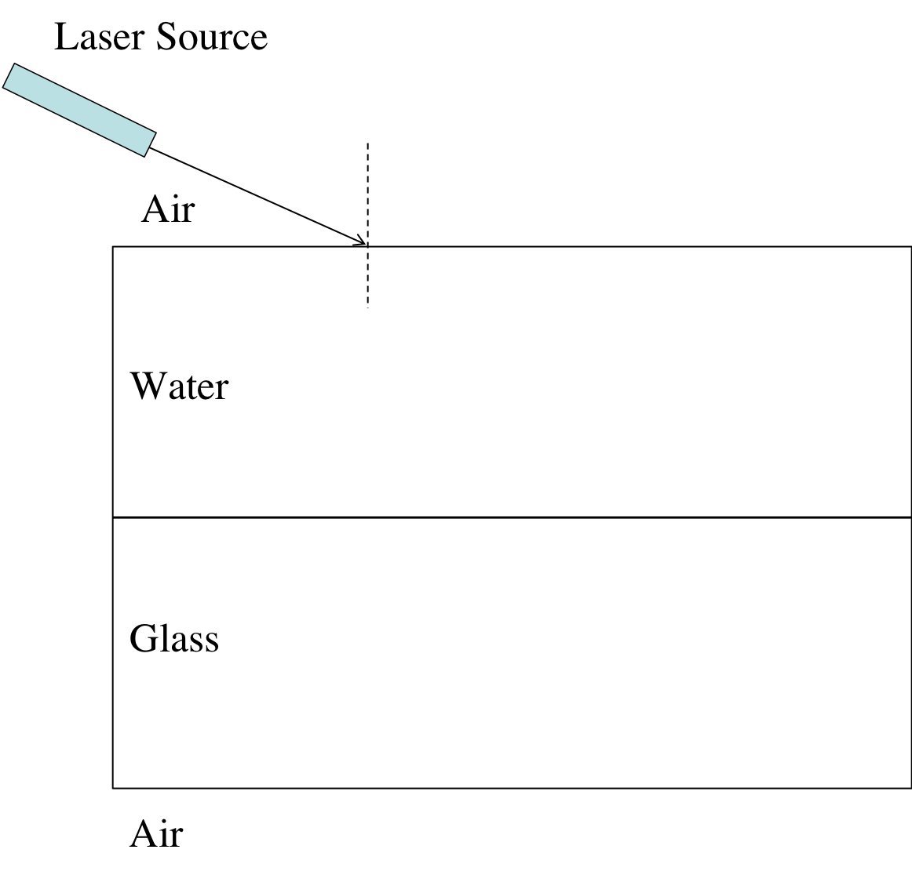
Air → water: the beam bends the normal.
Water → glass: the beam bends the normal (slightly).
Glass → air: the beam bends the normal, ending up .
Question 5 (2 marks)
Luke sits at the bottom of a pool and points a laser upwards. The laser meets the surface at an angle of 85° to the normal, which is greater than the critical angle.
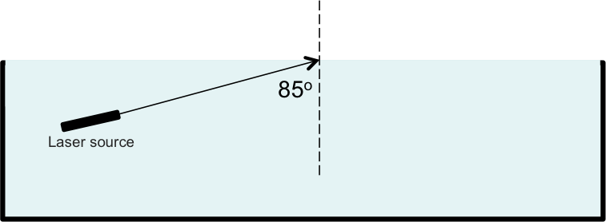
- At the surface the light is reflected back down into the water at ° to the normal.
- This is called .
Question 6 (5 marks)
A travelling wave on a slinky is filmed and superimposed on the graph below. The wave travels at 20 m/s.
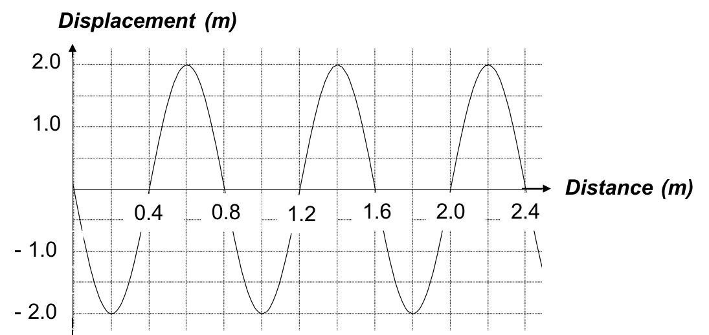
State the amplitude of the wave.
The wave is and .
Calculate the frequency of the wave source.
λ = 0.8 m (from the graph), so f = v / λ = 20 ÷ 0.8 = 25 Hz.
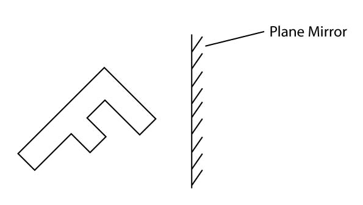
Draw (on paper) the image of the letter F in the plane mirror. Describe it, then compare.
The image is the same size (1 mark) and the same distance behind the mirror, but laterally inverted: a mirror-image F, tilted the opposite way, as if the F had been flipped over the mirror line (1 mark for correct orientation).
State the colour of projected light when these colours are mixed.
Green + red =
Red + cyan =
Question 15 (3 marks)
Ray measured the mass of 10 wombats; on average they were 27.0 kg. He later found his scale malfunctions and reads all objects 3.5 kg too light.
This is a .
Explain how the accuracy and the precision of Ray's measurements are affected by the faulty scale.
Accuracy is affected: every reading is 3.5 kg too low, so the true average is 27.0 + 3.5 = 30.5 kg (1 mark). Precision is not affected: the scale still gives consistent results, so the spread of readings is unchanged (1 mark).